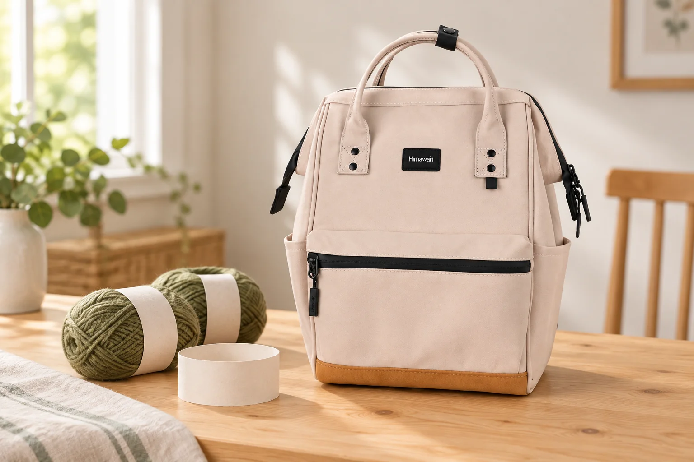

같은 색 뜨개실을 더 살 때, 라벨도 챙겨가세요

조금만 더 뜨면 끝날 것 같은데 실이 모자랍니다. 전에 샀던 색을 기억하고 매장에 갔지만, 비슷한 실이 선반에 여러 개 있습니다. 쓰던 라벨을 챙겨가면 제품 이름과 색 번호를 다시 찾기 쉽습니다. 염색 로트가 표시된 실이라면 그 번호도 함께 봅니다.
색 번호 옆의 로트도 살펴보기
실 제조사 Lion Brand의 공식 안내에서는 염색 로트를 실을 염색한 생산 묶음으로 설명합니다. 같은 색으로 판매하는 실도 다른 로트에서는 색이 달라질 수 있습니다. 라벨에 색 번호와 로트 번호가 모두 있다면 두 항목을 구분해 읽어보세요. 표시 이름과 위치는 사용하는 실의 라벨을 기준으로 확인합니다.
라벨은 작업물과 함께 보관하기
실을 풀기 전에 라벨 전체를 사진으로 남기거나 종이 라벨을 작은 봉투에 넣습니다. 제품 이름이 있는 면과 번호가 있는 면을 모두 알아볼 수 있게 찍어두세요. 여러 작품을 동시에 뜬다면 어느 라벨이 어느 작업물의 것인지 함께 적습니다. 라벨을 떼어 한곳에 모으기만 하면 나중에 실과 다시 짝을 맞춰야 합니다.
매장에는 쓰던 실도 조금 가져가기
같은 로트를 찾을 수 없다면 남은 실이나 작은 편물을 가져가 비교할 수 있습니다. Lion Brand는 자연광과 인공조명에서 색을 살펴보도록 안내합니다. 휴대전화에 찍힌 색만으로 고르기 어려울 때 직접 나란히 놓아보세요. 눈으로 비슷해 보여도 같은 로트라는 뜻은 아니므로 라벨을 다시 확인합니다.
추가 구매 전에 필요한 양 문의하기
새 작업을 시작할 때는 도안에 적힌 실과 필요한 양을 확인하고, 한 작품에 쓸 묶음의 로트를 함께 살펴봅니다. 나중에 같은 로트를 다시 구할 수 있는지는 판매처에 문의하세요.
참고·안내
- Himawari No.124S 제품 정보
- Lion Brand 공식 염색 로트 안내
- No.124S 베이지의 실제 원본과 제조사 카탈로그 외부 치수 22 × 33 × 14cm(가로 × 세로 × 폭)를 참고한 AI 연출 사진입니다. 실타래와 빈 라벨은 소품이며 특정 실의 색상 일치나 가방 수납을 실측한 사진은 아닙니다. 치수는 측정 방식에 따라 차이가 있을 수 있습니다.
자주 묻는 질문
색 번호가 같으면 염색 로트도 같은가요?
색 번호와 염색 로트는 따로 확인합니다. Lion Brand의 안내에 따르면 같은 색의 실도 다른 로트에서 색 차이가 날 수 있습니다.
라벨을 버렸다면 무엇을 가져가면 좋을까요?
남은 실이나 작은 편물을 가지고 비교하고, 제품명과 번호는 확인할 수 있는 구매 기록에서 찾아보세요. 실제로 확인하지 못한 로트 번호를 추측해 적지 않습니다.